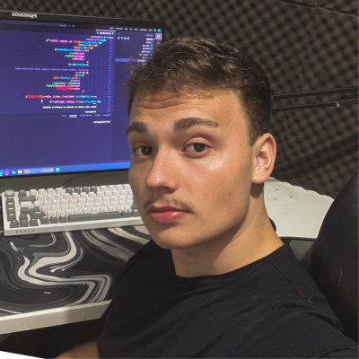
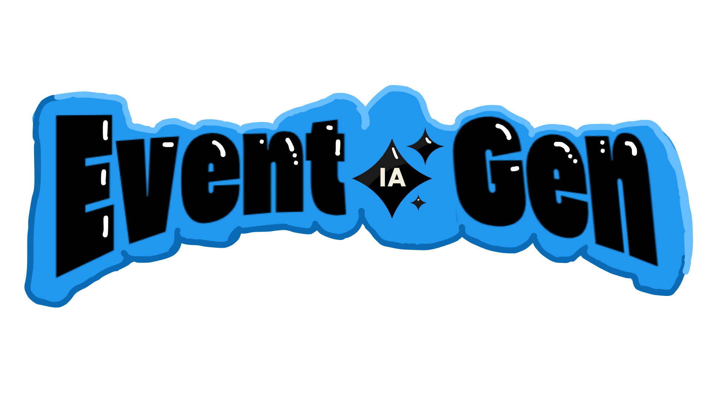
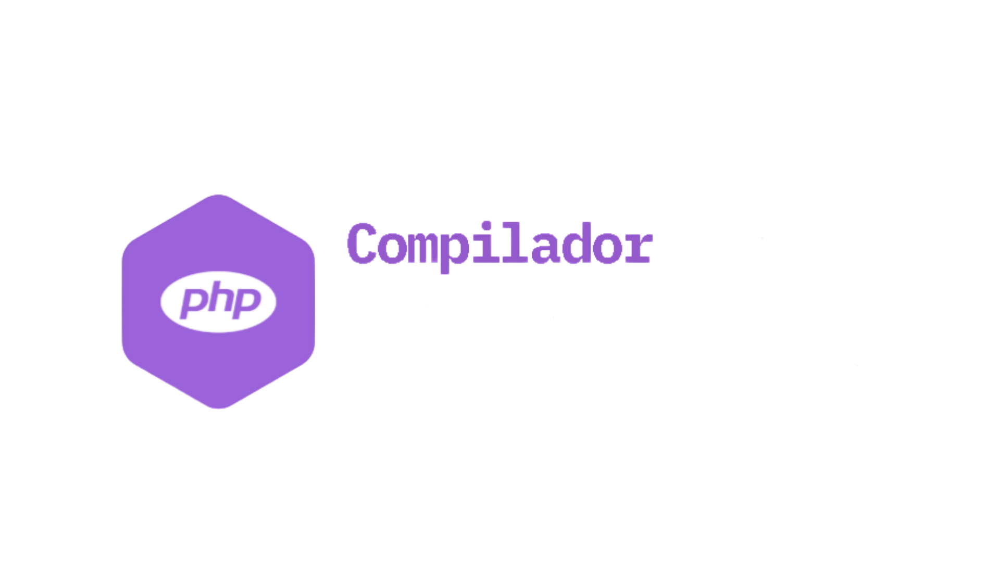
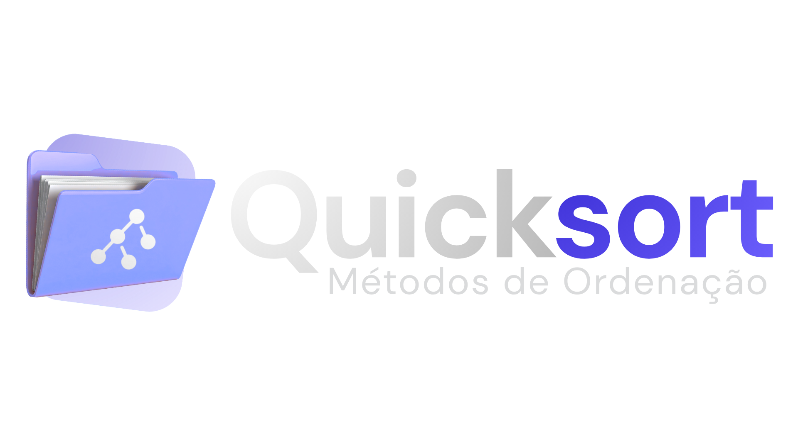
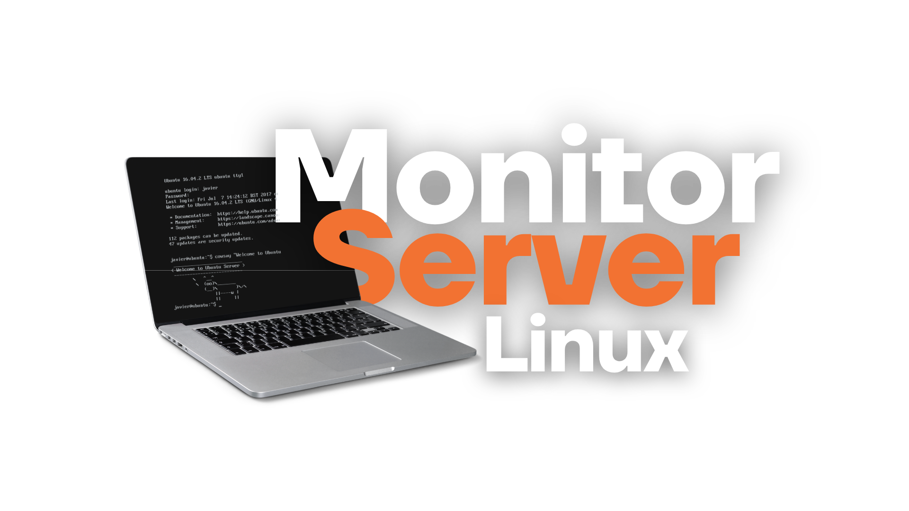
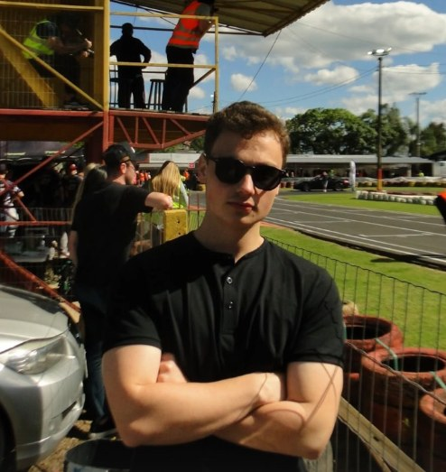

Eventos · Python
HubEvent
Plataforma de venda de ingressos com validação de entrada por reconhecimento facial.
Explorar repositórioBernardo França Coelho
Sou estudante de Ciência da Computação, com experiência em suporte técnico e projetos que conectam desenvolvimento, dados e infraestrutura.
Ituporanga, SC / Tecnologia da informação

Projetos
Uma seleção de aplicações e estudos.
Código, ideias e aprendizado contínuo.
Plataforma de venda de ingressos com validação de entrada por reconhecimento facial.
Explorar repositório
Aplicação que sugere a distribuição de equipes de segurança, brigadistas e médicos em eventos.
Explorar repositórioSistema web para acompanhar investimentos e organizar informações em uma interface digital.
Explorar repositório
Projeto acadêmico para praticar lógica, compilação e organização de código em uma aplicação web.
Explorar repositório
Implementação de árvores binárias e estudos de busca e manipulação de estruturas de dados. Inclui também o estudo de ordenação com QuickSort.
Árvore binária QuickSort
Aplicação web de monitoramento de CPU, memória e processos de um sistema Linux.
Explorar repositórioSobre mim

Sou Bernardo França Coelho, graduando em Ciência da Computação no IFC — Campus Rio do Sul. Minha trajetória combina atendimento a clientes, diagnóstico de incidentes e desenvolvimento de projetos acadêmicos.
Atuei por 1 ano e 9 meses em suporte técnico a clientes do varejo. Nos projetos, desenvolvi aplicações web e configurei ambientes Linux na AWS, explorando a conexão entre software e infraestrutura.
IFC — Campus Rio do Sul
2024 – em andamento
Formação complementar · UNIDAVI
Experiência
Ago 2024 — mai 2026
Estagiário de Suporte Técnico
Contato
Para oportunidades em tecnologia e conversas sobre projetos.
coelhobernardo199@gmail.com